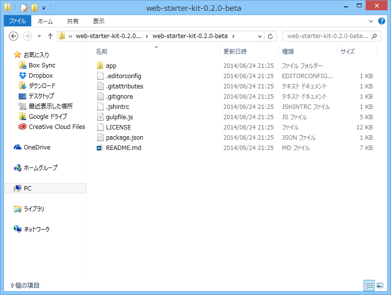
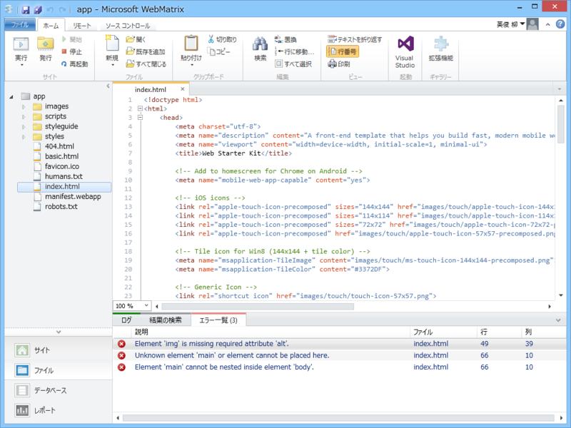
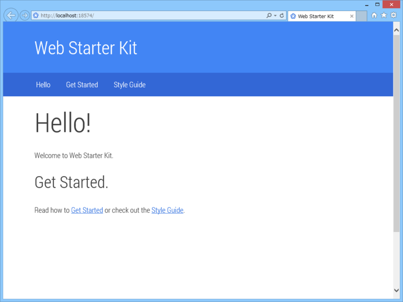
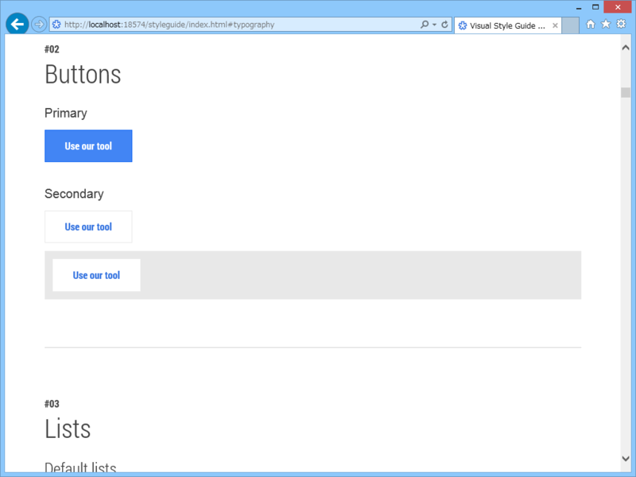
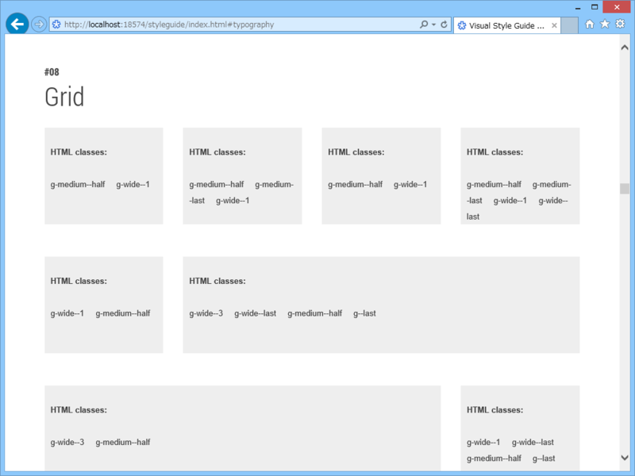
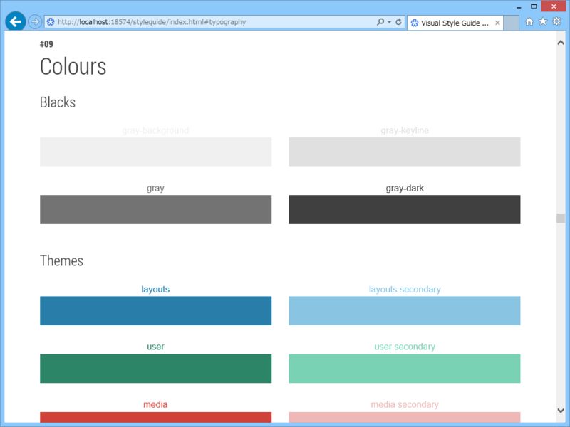
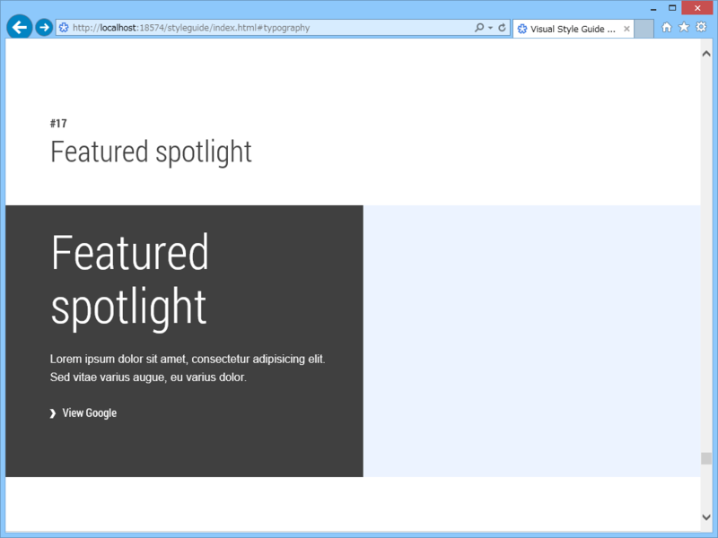
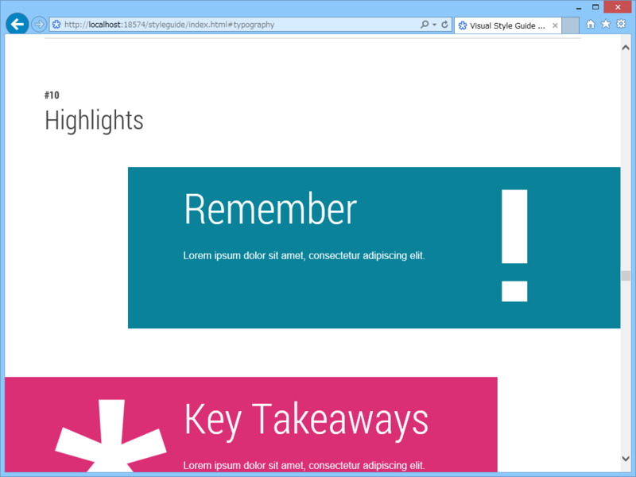
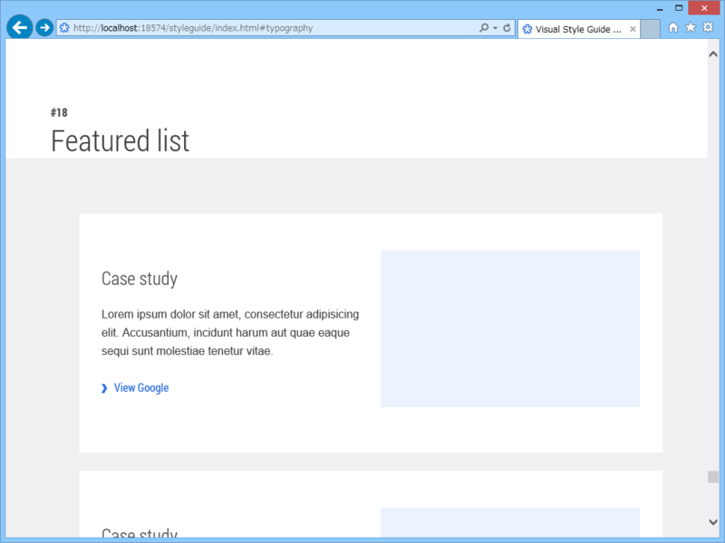

Google の「Web Starter Kit」を WebMatrix で
公開日：
Twitter で小耳にはさんだ「Web Starter Kit」を少し試してみました（別に WebMatrix で、じゃなくていいんだが）。いわゆるボイラープレート（テンプレみたいなもん）ですね。
- Mobile-optimized HTML boilerplate
- Responsive multi-device layout
- Visual component style guide
- gulp.js build tooling (optional)
- LiveReload
- Cross-device synchronization of clicks, scrolls, navigation, and form-filling
- Image optimization
- JavaScript minification and optimization
- CSS optimization
- HTML minification
- PageSpeed performance reporting
- CSS autoprefixing
というのが特徴らしい。ブラウザーサポートはこんな感じ。
- IE10, IE11, IE Mobile 10
- FF 30, 31
- Chrome 34, 35
- Safari 7, 8
- Opera 23, 24
- iOS Safari 7, 8
- Opera Coast
- Android / Chrome 4.4, 4.4.3
- Blackberry 1.0
IE11 で少しずれてるところがあった気もするけどキニシナイ。

さっそくダウンロードし、アーカイブを展開しました。よくわからんのがぐちゃぐちゃ入ってる（gulp.js - the streaming build system のためのファイルなんだろうか？）けど、メインは app フォルダの中身みたい。このフォルダをさっそく［Microsoft WebMatrix で Web サイトとして開く］。

スクリプトはメニュー関連のが最小限度。スタイルシートは SCSS で書かれていて、CSS にコンパイルされています。ほかに Web フォントやらアイコンやらが少し。
basic.html は HTML5 Boilerplate CSS を読み込んだだけのシンプルなスタイル。
<!-- build:css styles/components/main.min.css --> <link rel="stylesheet" href="styles/h5bp.css"> <!-- endbuild -->
inde.html はいろいろ読み込んで Google デザインっぽくしたやつ。
<!-- build:css styles/components/main.min.css --> <link rel="stylesheet" href="styles/h5bp.css"> <link rel="stylesheet" href="styles/components/components.css"> <link rel="stylesheet" href="styles/main.css"> <!-- endbuild -->
とりあえず実行。

Google っぽい。日本語フォントで使うなら、少しいろいろいじった方がバランスがいいかもしれないかなー。そういうセンスないからよくわかんないけど。
スタイルガイドものぞいてみました。

ボタン。とっても……Google っぽいです……。

グリッド。ここらへんは Bootstrap とかでもお馴染み。ざっとしか見てないけど、2段～4段組みまで割りと柔軟にレイアウトできるみたい。

カラー。色のセンスないので、こういうところだけでも真似してみたい。前景と背景だけ色決めて、ほかはアクセントカラーとその薄いバージョンをうまく使う感じで……。

あと、こういう機能紹介っぽい感じのページもいいなぁと思った。まるまる使うと Google 臭がスゴいのであんまり使わない気がするけれど、エッセンスだけでも取り込みたい。